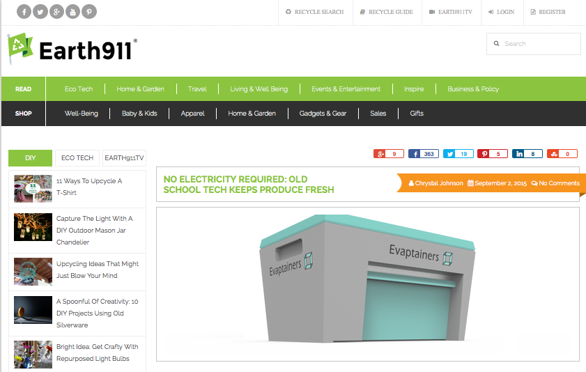

Earth911 is a mobile application dedicated to promoting recycling and waste reduction. It serves as a valuable resource for users seeking information on recycling centers and drop-off locations for various materials, from plastics to electronics. Beyond recycling locator functionality, Earth911 offers educational content on sustainable waste management practices and environmental conservation. By providing accessible and comprehensive recycling information, Earth911 empowers users to make eco-friendly choices in their daily lives, contributing to a cleaner and more sustainable planet.
It provide features such as:
1.Recycling Locator: Earth911 serves as a comprehensive recycling locator, helping users find nearby recycling centers and drop-off locations for various materials such as plastics, glass, paper, electronics, and more.
2.Waste Reduction: The app promotes waste reduction by providing information on recycling options for a wide range of materials, encouraging users to divert waste from landfills and adopt more sustainable disposal practices.
3.Environmental Education: Earth911 offers educational resources and articles on recycling, waste management, and environmental conservation, empowering users with knowledge to make informed decisions about their environmental impact.
4.Material Database: Users can search for recycling information by material type, accessing detailed guidelines on how to properly recycle or dispose of specific items to minimize environmental harm.
5.Community Engagement: Earth911 fosters community engagement by enabling users to share recycling tips, experiences, and information with others, creating a supportive network of environmentally conscious individuals.
6.Mobile Convenience: With its mobile app, Earth911 provides on-the-go access to recycling information, making it easy for users to find recycling options and make sustainable choices wherever they are.
